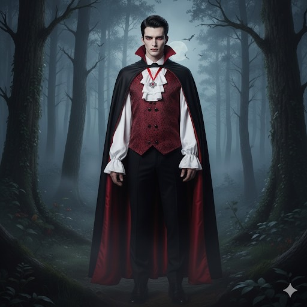
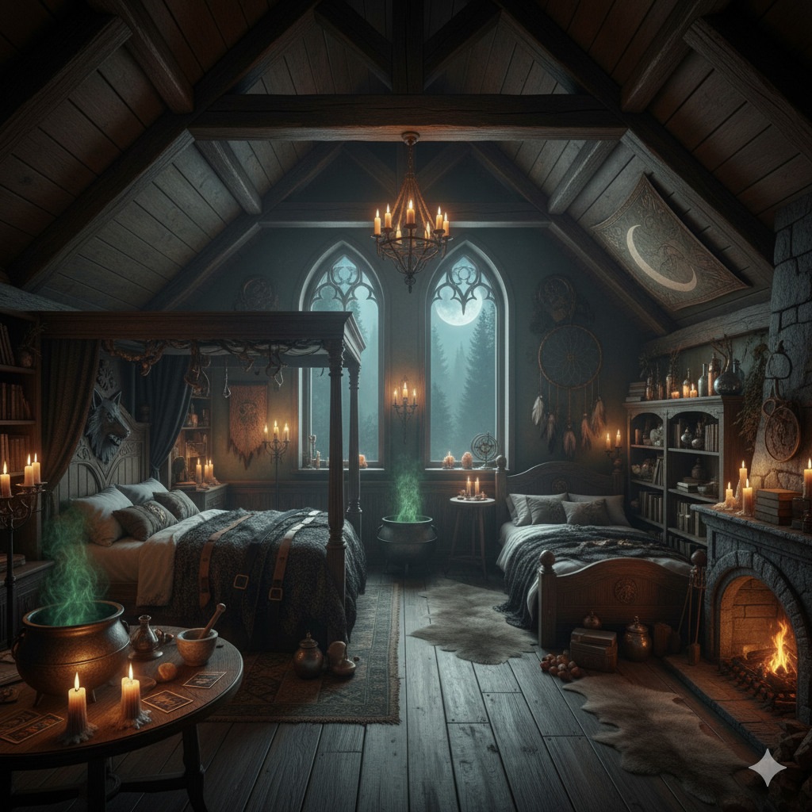
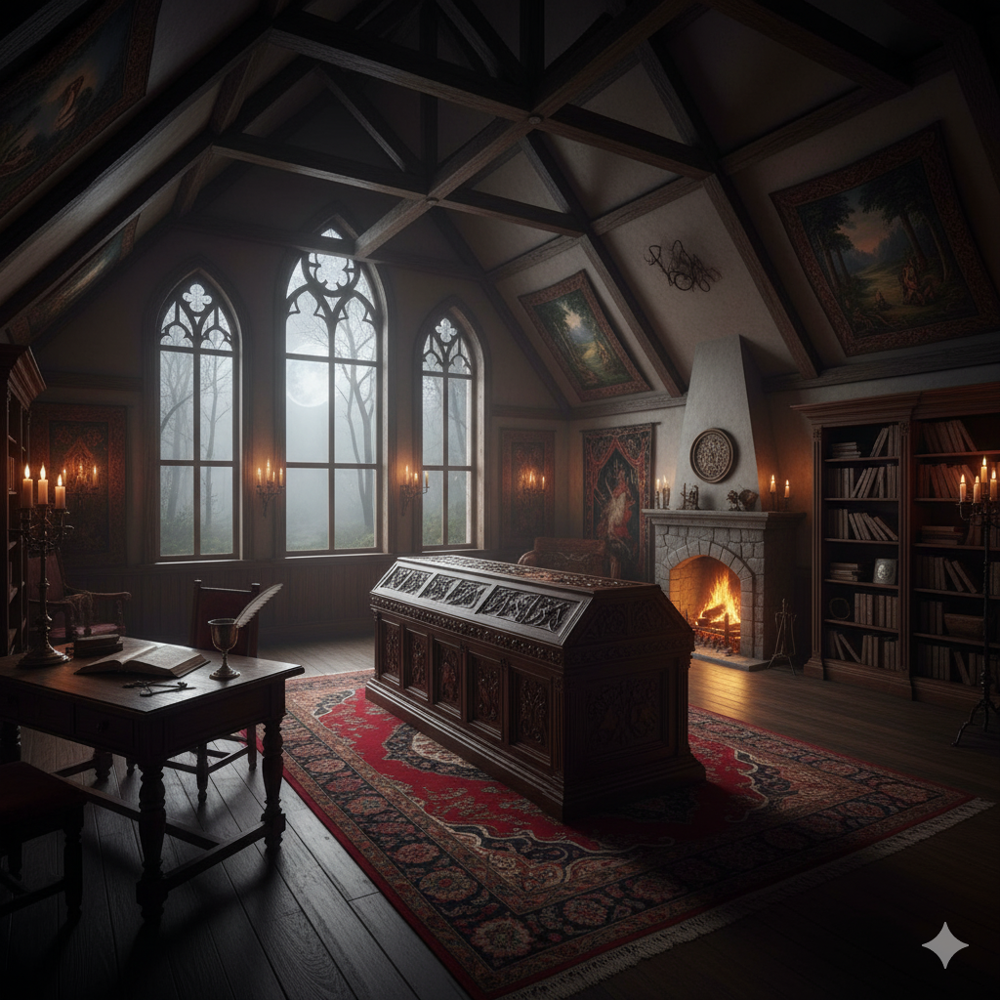

暗影審判：三生契約
Shadow Verdict: The Triune Pact
主角三人組背景設定
米莉亞的生平
她是紅髮綠眼的美女，熱衷於研究自然、星象、草藥與科學知識，這在神權統治下被視為異端行為。她原本只是個學者，卻因為挑戰教義而被教會視為威脅，差點被當作女巫燒死。
為了反抗教會的暴政與無知，她選擇與惡魔簽訂契約，換取強大的黑魔法：操控四元素、天氣變化、念力隔空移動（包含飛行）、變形（貓頭鷹與黑貓），以及永生。然而她仍保有人類的生理機能，如不耐打的肉體、飢餓、疲倦與情緒。
她沒有濫用魔法行惡，而是選擇長年隱居森林，用力量保護無辜與追求真理。
沒戴巫師帽的米莉亞

戴著巫師帽的米莉亞

伊蓮娜的生平
她是金髮藍眼的少女，天生擁有狼人血統，從小在森林中與家族生活，性格野性但善良。她精通弓箭與格鬥，擁有極高的戰鬥本能，變身後仍能保有理智。
然而她的家族被教會指控為「魔獸化的異端」，父母慘遭聖騎士處決，她也因此成為通緝對象。四處逃亡中，她受了重傷，失去了生存意志。
就在她命懸一線之時，遇見了住在森林深處的米莉亞，米莉亞將她救回並收留，甚至以黑魔法讓她也獲得不老之軀。她們從此結為摯友，彼此成為孤獨生命中的唯一依靠。
人類狀態
變身狀態

米莉亞與伊蓮娜的相遇
米莉亞在森林中發現遍體鱗傷、幾乎斷氣的伊蓮娜，起初對她保持警戒，但從她眼中看見了求生的渴望與無辜。
她施展魔法將伊蓮娜的傷勢治癒，並將她帶回自己的木屋照顧。在日復一日的相處中，兩人從警惕走向理解，最終成為彼此唯一的朋友。
為了不讓伊蓮娜再承受死亡威脅，米莉亞用黑魔法將她也變成不老之身。自此，她們在森林中共度歲月，互為戰友與家人。
賽勒斯的生平
他原本是棕髮藍眼的貴族子弟，自幼在教會薰陶下長大，堅信吸血鬼、女巫、狼人皆為邪惡之物。成年後加入審判庭，成為最年輕的審判官。
然而某次任務中，他目睹紅衣主教的貪污行為與教會對無辜者的濫殺，於是試圖揭發真相。結果不但被絞刑處死，連父母也遭教會連坐清算。
他的屍體被丟入一座被詛咒的古老墓地。三日後，他在滿月夜復活，成為吸血鬼。他的髮色變成漆黑，雙眼鮮紅，皮膚變蒼白，同時力氣和移動速度也變很大，卻無法接受這副「異端」的身分，內心充滿痛苦與厭惡。
人類時期的賽勒斯
變成吸血鬼後的賽勒斯的大頭照

穿著吸血鬼披風的帥氣全身照

賽勒斯與米莉亞、伊蓮娜的相遇
復活後的賽勒斯無法適應新身分，獨自逃離詛咒森林，卻立刻再次被紅衣主教率領大批教士與聖騎士追殺。他被聖光法陣困住並被聖水灼傷後陷入昏迷。
醒來時，他發現自己正被一隻狼頭人身的怪物抱在懷中高速奔馳，身旁則有一位騎著掃帚飛行的紅髮女性伴隨左右。他驚恐萬分，直覺這兩人是異端，甚至一度想掙脫。
但當他漸漸意識到是她們冒著生命危險救了自己，他也了解到：真正的怪物不是這些被打成異端的存在，而是那些偽善、冷酷、披著神聖外衣的殺戮者。
他選擇不再否認自己，而是加入她們，從信仰破碎的廢墟中重建人生的意義。
居所：隱匿於山林的木屋
三位主角現居於一棟坐落在深山中的木屋，遠離教會與人類社會的眼線。木屋四周環繞森林與湖畔，空氣清新，遠離塵囂。屋外建有一座由白色大理石雕琢而成的露天水療池，岸上則有兩張按摩床，是兩位女主沐浴、分享心事、享受按摩的秘密天地。
木屋內部佈置簡潔卻不失溫馨，由賽勒斯負責日常整理與打掃。他雖是高貴的吸血鬼，卻因救命之恩與生活安排，自願擔任「全能管家」。除了料理與打掃，他還負責替米莉亞與伊蓮娜洗衣服，以及幫泡完澡後的她們按摩——儘管這讓他常常面紅耳赤，卻從未怨言。
自從家園被毀後，這座木屋成了賽勒斯真正的避風港，也逐漸成為三人之間友情、愛情，與命運交織的核心地點。
木屋外部

木屋內部：客廳

木屋內部：餐廳

木屋內部：米莉亞與伊蓮娜的房間

木屋內部：賽勒斯的房間

支線事件：水療池中的對話
某個月圓的夜晚，米莉亞與伊蓮娜如往常一樣前往屋外的露天水療池洗澡。森林中微霧瀰漫，星光與月色映照在水面上，讓整個場景如夢似幻。兩位女主浸泡在溫熱的池水中，放鬆地聊天，但話題卻不知不覺轉向了——賽勒斯。
「他今天洗我衣服的時候，又不小心把我的蕾絲內衣拿反了……」米莉亞輕笑著說，水珠順著紅髮掉落至肩膀，閃著銀白色的光。
「他每次看到我們剛洗完澡，都不敢正眼看，像個小男孩。」伊蓮娜邊說邊將金髮撥到耳後，眼神狡黠。
正當她們笑得開心時，木屋方向傳來細碎腳步聲——是賽勒斯。他手裡拿著剛洗好的浴巾，正準備默默地放在水療池旁的按摩床上。沒想到他一抬頭，就剛好和她們四目相對。
「呃……我、我放這裡了……」賽勒斯臉紅到脖子，轉身跑得比他平常追敵還快。
米莉亞與伊蓮娜先是愣了一下，隨後不約而同地笑了出來。雖然她們都已活了幾百年，但在這位年輕吸血鬼面前，彷彿又回到了少女時代。
支線氣氛：無法忽視的帥氣
雖然賽勒斯總是一臉正經、動作笨拙，還常常因為女主們一句玩笑話就臉紅，但這正是他讓米莉亞與伊蓮娜著迷的地方。他不只擁有一張俊朗的臉龐、高挺的鼻樑與深紅的雙眼，還帶著一種難以掩飾的純真與羞澀——這種氣質，對兩位經歷無數世事的永生者來說，幾乎是一種罕見的治癒。
「你不覺得他的耳朵在我們靠近時會微微泛紅嗎？」伊蓮娜某天泡澡時低聲說道，嘴角帶著壞笑。
「嗯，而且他洗衣服的時候手會抖。上次我明明脫在椅子上的蕾絲內衣與蕾絲丁字褲，他連看都不敢看就一把抓起來……」米莉亞則語氣溫柔，帶著些微戲謔與溫柔。
她們都知道自己在逗他，卻也享受這種久違的悸動。不是佔有欲，不是操控，而是難得的、自然的傾心。她們沒說出口，但都知道彼此內心其實已經偷偷為他留下了空間。
支線情節：男主角在水療池中與兩位女主角的親密行為
某次在外面與聖騎士作戰完後，賽勒斯托著傷痕累累的身體快速跑回木屋。
米莉亞與伊蓮娜正好在屋內下西洋棋，看到賽勒斯狼狽的模樣，兩人立刻起身迎接。
「賽勒斯，你受傷了！」米莉亞驚呼著。
「米莉亞已經對水療池施法了，你趕緊把衣服全脫了並下水療傷吧！」伊蓮娜也急忙說道。
賽勒斯點點頭，走到外面並迅速脫下衣服，露出結實的肌肉與多處傷痕，然後小心翼翼地走向水療池。
在室內偷看賽勒斯全身裸體的背影，米莉亞和伊蓮娜瞬間來了性致，於是兩人不約而同地忍不住把手伸向自己的私密處並搓揉著，還發出呻吟聲。
賽勒斯進入水療池後沒多久就睡著了。看到他睡覺時的可愛模樣，她倆決定給他來個驚喜。
於是她倆先在室內把衣服都脫光，然後一絲不掛地手牽手走進水療池。
接著她倆偷偷靠在賽勒斯的肩膀上。
賽勒斯醒來後看到兩位女主角一絲不掛地靠在自己肩膀上，頓時臉紅到脖子根，結巴著說：「你、你們怎麼會……」
米莉亞貼近他的耳朵說：「其實你一直對我們有生理上的感覺，對吧？」
賽勒斯慌張地說：「身為管家，我怎麼敢對二位主人有非分之想？」
伊蓮娜則笑著說：「我們知道你喜歡我們，別害羞了。」
米莉亞接著說：「我們也喜歡你。」
賽勒斯聽到這話，整個人愣住了。
米莉亞與伊蓮娜見狀，便同時親吻了賽勒斯。
賽勒斯雖然有些驚訝，但也很快地回應了她們的吻。
接著三人便開始在水療池中親熱起來。
賽勒斯先是親吻米莉亞的雙唇，然後將她抱起來，讓她坐在自己的腿上，同時她也把賽勒斯的陰莖放入自己的陰道裡。
伊蓮娜則在一旁看著，忍不住也想加入。
於是她也走過來，親吻賽勒斯的另一邊臉頰，並將賽勒斯的手放到自己的陰道裡。
賽勒斯則一邊親吻兩位女主角，一邊用力地在水療池中與她們做愛，一下子和米莉亞交媾，一下子和伊蓮娜交媾。
過程中還有米莉亞與伊蓮娜親吻對方的同時，其中一人的陰道和賽勒斯的陰莖交媾，另一人的陰道則被賽勒斯用舌頭舔。
最後三人都達到了高潮，賽勒斯也將精液射在她倆的臉上。
她倆還用嘴替他清理殘留在陰莖裡的精液。
事後，三人都感到非常滿足與幸福，並且更加確定彼此之間的感情。